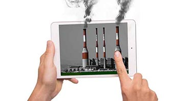

Comment combattre la pollution numérique ?
Il existe une pollution numérique, et il est urgent, étant donné notre utilisation du web, de se sensibiliser à ce phénomène . Comment Richard Hendricks et nous en tant que consommateur, pouvons-nous limiter notre pollution numérique ?
La pollution des entreprises
Tout d'abord dans l'article sur la pollution, on a vu que les data centers étaient de grands pollueurs du numérique (25 GES de ce milieu) .
La pollution des centres de données est due à leur consommation d'énergie, pour leur fonctionnement, mais également pour leur refroidissement.

Richard Hendricks au tribunal
" Ils peuvent utiliser les data centers comme « chauffage », afin de profiter de la chaleur dégagée. "
La majorité de la pollution vient donc de l'énergie nécessaire à la climatisation des serveurs. Les membres de Pied Piper pourraient donc soit utiliser des énergies renouvelables (solaire, éolien …) afin d'alimenter ces derniers. Mais, aussi maximiser le refroidissement, en favorisant un refroidissement naturelle grâce à un air davantage frais (dans les pays nordiques par exemple).
Ils peuvent utiliser les data centers comme « chauffage », afin de profiter de la chaleur dégagée. Comme par exemple à Bailly-Romainvilliers où une piscine utilise la chaleur des centres de données afin de tempérer l'eau.

Piscine de Bailly-Romainvilliers
La pollution des consommateurs
On peut tous également en tant que consommateur limiter ce fléau environnemental du numérique. Ce qui va solliciter les réseaux et
les data centers va être notre utilisation du Web.
Il faut donc adapter notre consommation du net, en envoyant des mails seulement si nécessaire, en compressant les pièces jointes au maximum et également en pensant à nettoyer nos boîtes mails de manière systématique. Fermer toutes les fenêtres de navigation que l'on n'utilise pas, essayer de limiter le chargement des pages. Plutôt que d'ouvrir un moteur de recherche et de charger la page que l'on souhaite, privilégier de taper directement l'adresse, ou l’utilisation de l'outil favoris de votre navigateur web.
Illustration de la Pollution Numérique
Il y aussi le Cloud, qui permet de sauvegarder des fichiers dans les nuages, ou plutôt dans des serveurs à distances. Il faut donc ne stocker que ce qui est nécessaire dans le cloud et stocker un maximum en local.
L'essor du streaming payant également participe à cette pollution, la plupart des personnes ont maintenant, au minimum un abonnement à une plateforme de streaming. Il est important de favoriser le téléchargement au streaming de votre série/film.
Sur ce même principe beaucoup de monde, utilise les réseaux sociaux. Cela vous est déjà arrivé de scroll dans votre file twitter et une vidéo se lance tout seul. Alors pensez à désactiver la lecture automatique des médias, cela pourra réduire votre empreinte carbone !

Image montrant différents services de streaming payant
Il existe énormément de solution à ce problème . Si l'on prend toutes ces habitudes, on peut drastiquement baisser la pollution numérique . C'est à nous tous d'agir, afin de sauvegarder notre monde réel, en maîtrisant notre consommation du monde numérique.

Les protagonistes de la série intrigués
Merci beaucoup pour la lecture de ces articles. Si le sujet vous à plus, n'hésitez pas à aller sur la page contact pour davantage d'information, vous pouvez également regarder ce Micro-Trottoir, permettant d'illuster le fait que la pollution numérique n'est pas très connu